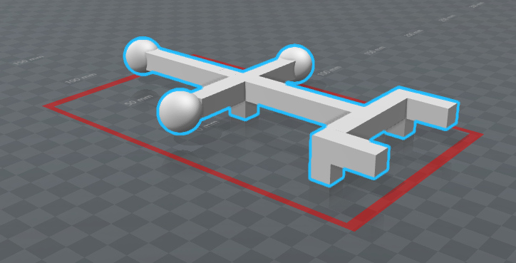
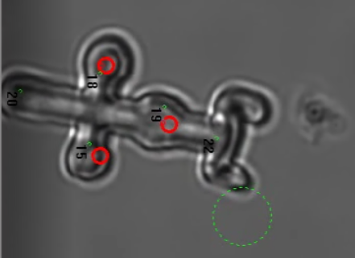

Microrobotics
Control of Holographic Optical Tweezers (HOT) by Natural User Interface (fingers, gaze, voice commands)
- Micromanipulation controlled by the fingers position (video).
- Push particles into sorting container using 3 fingers (video).
-
Select particles by gaze (using eye tracking camera) and start their Raman spectra measurement by a voice command.
(video).
Path planning
- Interactive path planning (video).
- Path to destination avoiding obstacles (video),
- if it fails, try to remove the obstacle by cooperating trap (video),
- if it fails too, try to use a brute force approach (video),
Computer game "crazy traps" running on HOT simulator
- Move cells into safe containers by fingers avoiding dangerous crazy traps (video),
2-Photon polymerization
-
3D model of object (fork) is created by the program "3D builder" which is a part of Windows 10 installation (fig. left).
Model is transferred into a series of bitmaps representing an input of 2-photon polymerisation apparatus.
Polymerized fork is used to manipulate objects of interest through laser traps indirectly (right).

